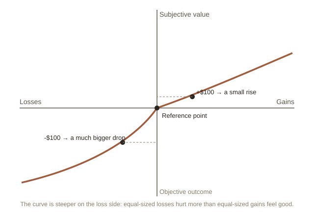

Chapter 1: The Model Everyone Assumed Was True
Classical economics is built on a character called homo economicus ("economic man" — a made-up perfectly rational person). This person always has clear preferences, always weighs every option correctly, and always picks whatever maximizes their own benefit. Almost every supply-and-demand graph you've ever seen quietly assumes this character exists.
Behavioral economics starts from a simple, almost embarrassing observation: real people are not that character. What makes the field interesting, though, isn't just "humans are irrational" — that's not a very useful sentence on its own. What makes it interesting is that the ways we deviate (move away) from pure rationality are systematic (they follow a consistent, repeatable pattern), not random noise. If people were randomly irrational, their mistakes would cancel out on average. Instead, whole populations get the same predictable "wrong" answer, in the same direction, in the same situations. That means it can be studied, modeled, and even predicted — which is exactly what earned Daniel Kahneman a Nobel Prize in 2002 and Richard Thaler one in 2017.
Losses hurt more than gains feel good
The founding result of the field is prospect theory, developed by Kahneman and Amos Tversky in 1979. They asked people to compare gambles, and found something that a purely rational model can't explain: losing $100 feels roughly twice as painful as winning $100 feels good. This is called loss aversion.

This single idea explains a lot of everyday behavior that looks strange under classical economics. People hold on to losing stocks far too long, hoping to "get back to even," because selling would mean accepting the loss as real. People are more upset about a $20 parking fine than they are happy about finding an unexpected $20 in an old jacket — even though the amount is identical.
The starting number quietly controls your judgment
A second, unrelated effect is called anchoring. If you see a jacket originally "priced" at $300, now on sale for $120, it feels like a great deal — even if $120 was always going to be the real price, and the $300 tag existed purely to set that first number in your head. Once a number is in front of you, your brain uses it as a reference point for judging every number that follows, even when you consciously know the first number was arbitrary (random, not based on a real reason).
Tversky and Kahneman demonstrated this in a famous experiment: they spun a wheel rigged to land on either 10 or 65, then asked participants to estimate what percentage of African countries are in the United Nations. People who saw the wheel land on 65 guessed significantly higher than people who saw it land on 10 — despite the wheel obviously having nothing to do with the correct answer.
Same facts, different words, different decision
A third effect, framing, shows that people don't just respond to facts — they respond to how facts are worded. Ground beef labeled "90% lean" sells better than identical beef labeled "10% fat," even though the two labels describe the exact same product. Doctors describing a surgery's outcome as "90% survive" get more patients to agree to it than doctors who say "10% die" — same statistic, opposite framing, different real-world decisions being made by adults with full information in front of them.
Why this matters beyond curiosity
These aren't party tricks. Once you accept that human decision-making has predictable blind spots, it changes how you'd design anything people interact with: how a menu lists prices, how a retirement plan enrolls new employees by default, how a government writes a public health warning. That design space — deliberately working with these patterns instead of against them — is usually called "nudging," and it's a natural next place to go deeper if you want to.
Try this
Ideas for noticing or testing this in your own life.
- Notice it in gambling or sunk-cost moments: next time you (or someone else) keep playing to "win back" a loss, or hold onto a losing stock hoping to get back to even, that's loss aversion — the pain of accepting the loss outweighing the actual math.
- Try it before your next purchase: notice the first price you saw for something (a "was $300, now $120" tag, a competitor's price) and ask whether that number is actually relevant to what the item is worth to you, or whether it's just anchoring your judgment.
- Notice framing in the news this week: count how often the same fact gets described in terms of what you'd gain versus what you'd lose — "90% survive" vs. "10% die" — and watch how differently each version lands on you.
Worth pulling on?
A few loose threads from this chapter — if any of these genuinely grab you, that's a good sign of where to go next.
- Countries with organ donation as the default get far higher donor rates than countries where you have to actively opt in — same choice, same consequences, wildly different outcome, just because of which box is pre-checked. → Chapter 2 could dig into "nudging" and choice architecture directly.
- The Ultimatum Game: one person is given $10 and must offer some split to a stranger. If the stranger rejects the offer, both get nothing. A purely rational stranger should accept any offer above $0 — free money is free money — but real people routinely reject "unfair" splits like $9/$1, willingly burning money to punish unfairness. → A separate topic under Economics: Game Theory in Real Markets.
- The sunk cost fallacy: finishing a bad movie "because you already paid for the ticket" makes no logical sense — the money's gone either way — yet almost everyone does it. It's one of the most common, most personally recognizable biases once you know its name. → Could be its own chapter: everyday biases beyond loss aversion.